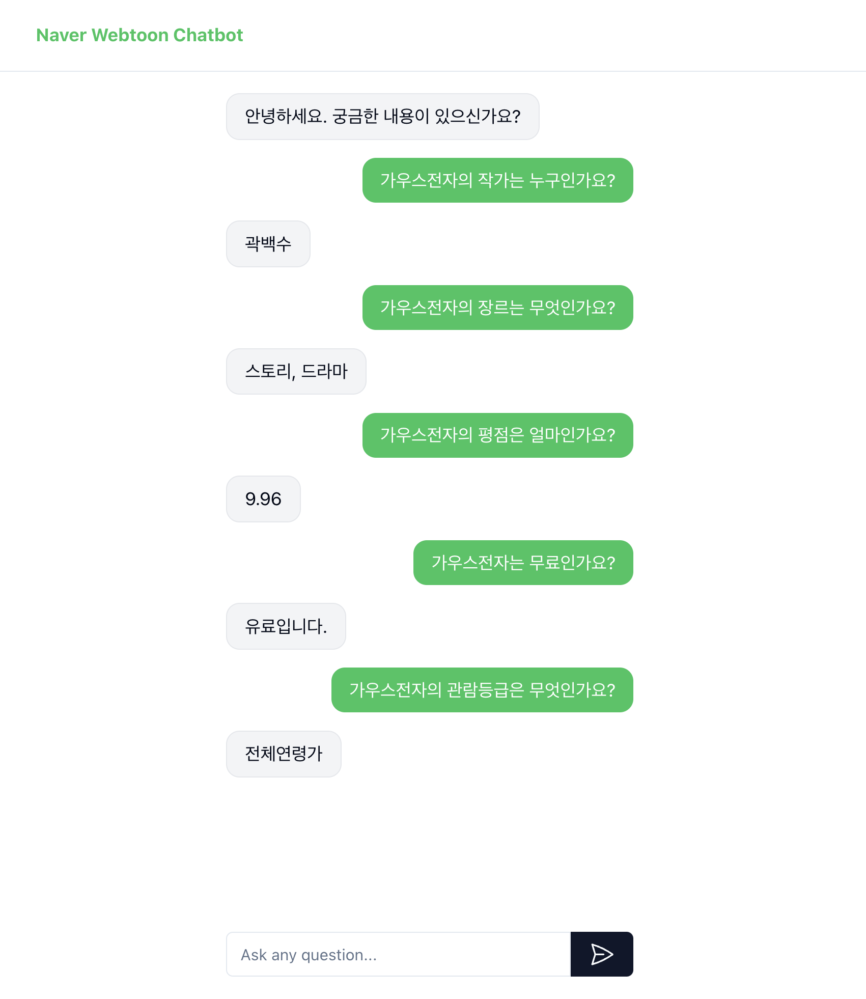
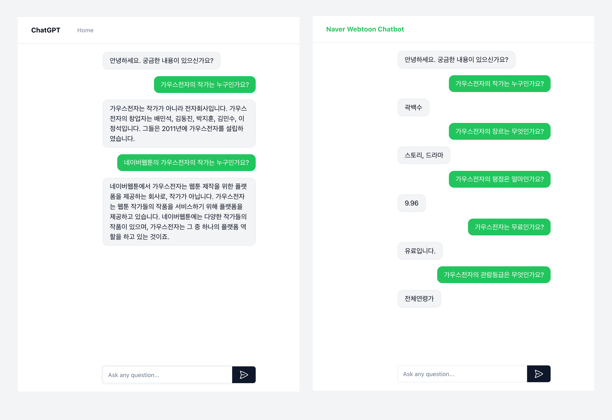
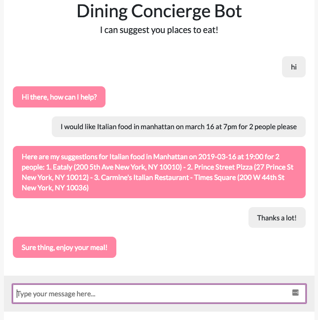

네이버웹툰 챗봇 프로젝트
 KoAlpaca 모델을 베이스로 하여 네이버웹툰 데이터를 학습시킨 챗봇을 구현해보았습니다.
KoAlpaca 모델을 베이스로 하여 네이버웹툰 데이터를 학습시킨 챗봇을 구현해보았습니다.

PEFT의 LoRA기법을 사용하여 Fine-tuning 하여 성능을 향상시켰고, 2100건의 네이버웹툰의
작품들의 기본정보 (작가명, 장르, 평점, 유/무료 여부, 관람등급, 연재완료, 출시일)을 제공합니다.

ChatGPT api를 연동하여 얻은 답변(왼쪽)과 네이버웹툰 데이터를 학습한 챗봇의 답변(오른쪽) 비교
왼쪽의 ChatGPT는 가우스전자의 작가가 누구인지 물었을 때 가우스전자가 전자회사라고 주장했으며, 두번째 질문으로 네이버웹툰의 가우스전자의 작가를 물었을 때는 가우스전자가 네이버웹툰의 플랫폼 회사라고 거짓정보(Halllucination)를 주고 있습니다.
반면에 오른쪽의 네이버웹툰 데이터를 학습한 모델은 가우스전자의 작가가 누구인지 물었을 때 정확하게 곽백수 작가라고 답변하고 있습니다.
Dining Concierge Chatbot
Built a serverless restaurant recommendation chatbot service with AWS Lambda, S3, Amazon Lex API and implemented back-end logics
in Python. Used ElasticSearch for data indexing and searching and performed data processing on raw data scraped from the yelp API
and stored the processed data in DynamoDB

Restaurant Recommendation App
Built a database-driven web application using Node.js, SQL, and Google Maps API with functionalities such as a login page,
a restaurant recommendation page based on user's real-time location, save the favorite restaurants in user's note, etc.
Selected MySQL for data storage.

Real-time Voting System
This real-time voting web application was made for the 2020 United States presidential election with Python and Apache Kafka,
which enables batch processing 1 million+ of votes in every 5 seconds; Selected MongoDB for data storage.


Pipeline for 1000+ Kaggle Competitions
This was a project that 60 students of the entire class worked together under the supervision of Prof. Iddo Drori at NYU Center for Data Science.
We achieved a data pipeline which processes 1000+ Kaggle Competitions' datasets and chooses the best machine learning
model and returns the most accurate prediction for each Kaggle competition.

DJ's Beauty Supply: Online Shopping Platform
Developed this online shopping platform for a beauty supply brand with JavaScript, CSS, HTML5, and Magento

Tang Two: Online Food Ordering Website
Developed this online food ordering website for a restaurant client with PHP, CSS, HTML5, and Wordpress

Bank of Shirts: Online Shopping Platform
Developed this online shopping platform for a fashion brand with JavaScript, CSS, HTML5, and Magento